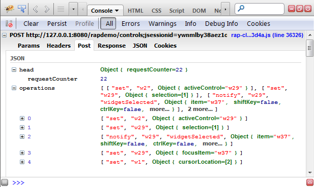

In 1.5 we replaced the communication between server and client with a new, JSON-based format. Now, the client also sends it's changes in the same way - no request parameters involved anymore. All widgets LCAs have been refactored to handle the new JSON-based message.

The exact format is described in the RAP Protocol wiki page.